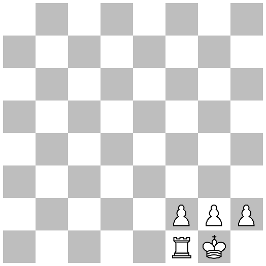
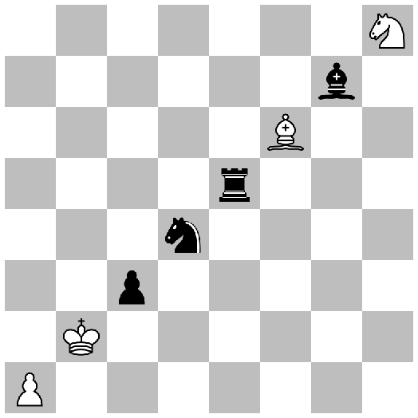

8.6
2 Chess Boards
| (require chess/board) | package: chess |
A chess board is an 8-by-8 rectangular grid of squares, and a collection of chess pieces placed on those squares.
procedure
(chess-board? v) → boolean?
v : any/c
A predicate for chess boards.
value
The empty chess board, which contains no pieces.
Example:
value
The standard starting chess board.
Example:
procedure
(chess-board square piece ... ...) → chess-board?
square : chess-square? piece : colored-chess-piece?
Examples:
> (define board (chess-board f2 white-pawn g2 white-pawn h2 white-pawn f1 white-rook g1 white-king)) > (chess-board-pict board) 
value
Examples:
> (define board (for/reducer into-chess-board ([rank (in-chess-ranks)] [file (in-chess-files)] [piece (in-immutable-set colored-chess-pieces)]) (define square (chess-square #:rank rank #:file file)) (chess-square-occupy square piece))) > (chess-board-pict board) 
procedure
(chess-board-ref board square) → (or/c colored-chess-piece? #f)
board : chess-board? square : chess-square?
Examples:
> (chess-board-ref starting-chess-board a1) (colored-chess-piece #:owner #<white> #:type #<rook>)
> (chess-board-ref starting-chess-board e8) (colored-chess-piece #:owner #<black> #:type #<king>)
> (chess-board-ref empty-chess-board a1) #f
procedure
(chess-board-ref-square board square)
→ (or/c chess-square? occupied-chess-square?) board : chess-board? square : chess-square?
Like chess-board-ref, but returns an occupied chess square
containing the piece at square in board. If that square is
empty, then square is returned unchanged.
Examples:
> (chess-board-ref-square starting-chess-board c8)
(occupied-chess-square
#:file (chess-file 2)
#:piece (colored-chess-piece #:owner #<black> #:type #<bishop>)
#:rank (chess-rank 7))
> (chess-board-ref-square starting-chess-board e4) #<chess-square:e4>